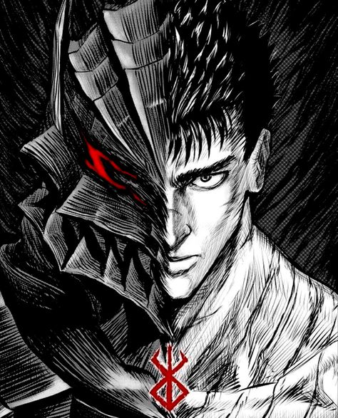

Berserk - The Black Swordsman

Berserk is a Japanese dark fantasy manga series written and illustrated by Kentaro Miura. Known for its mature themes, complex characters, and stunning artwork, Berserk follows the story of Guts, a lone mercenary, as he battles against both human and supernatural forces.
Berserk first began serialization in 1989 and was serialized in Young Animal magazine. The story follows the journey of Guts, whose life is marked by struggle, vengeance, and the pursuit of a better future. The series spans numerous arcs, including the iconic Golden Age arc and the Eclipse event, one of the darkest moments in manga history.

Berserk features a cast of deep and complex characters, including:

Berserk explores several themes, including: